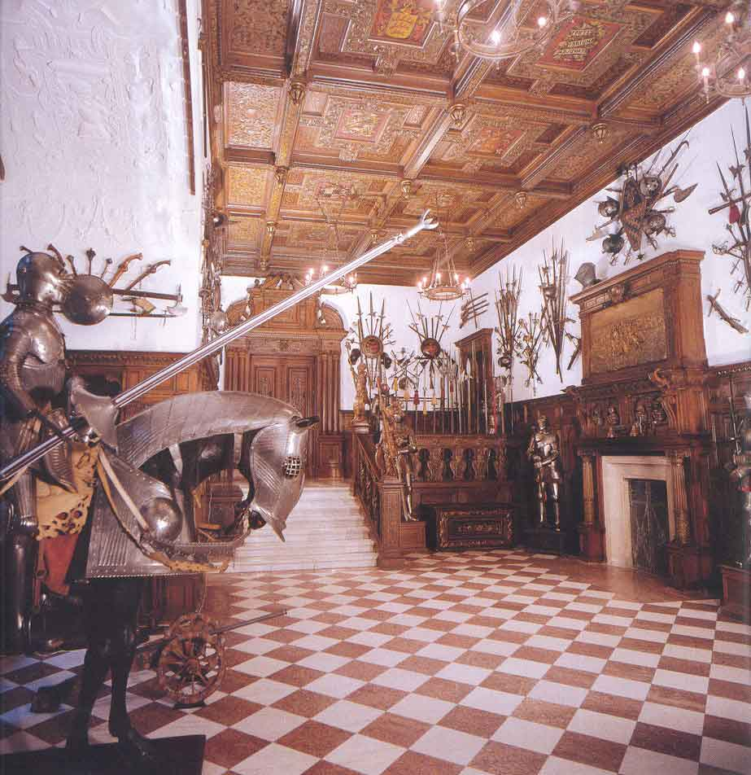
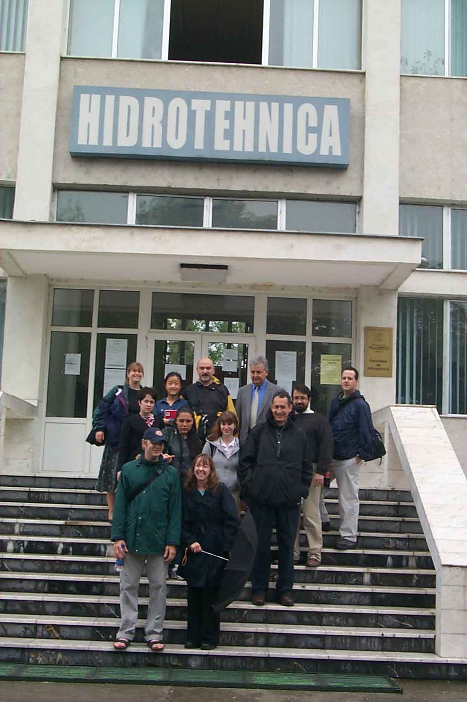

| turkish |
| home page |
| -Germain was often called, was not a scion of the French family. The theory long held that he was a Portuguese Jew has now been discarded as untenable. -Germain appeared in Leipzig in 1777 as Prince Ragoczy. He also admitted to Prince Karl of Hesse that he was the son of Prince Ragoczy and that he was reared and educated by the last Duc de Medici. The contradictory nature of the data regarding the Comte de St. |
|  |
|
|  |